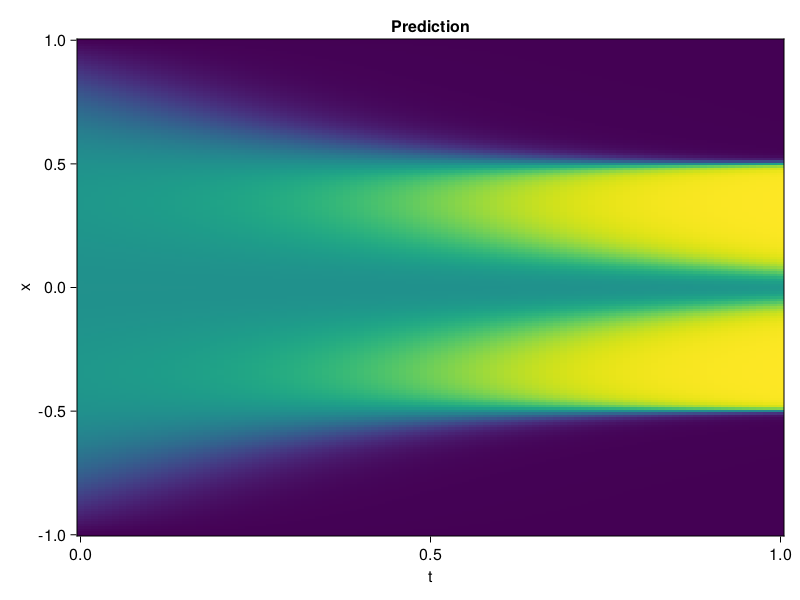

Allen-Cahn Equation with Sequential Training
In this tutorial we are going to solve the Allen-Cahn equation with periodic boundary condition from $t=0$ to $t=1$. The traning process is split into four stages, namely $t\in [0,0.25]$, $t\in [0.0,0.5]$, $t\in [0.0,0.75]$ and $t\in [0.0, 1.0]$.
using ModelingToolkit, IntervalSets
using Sophon
using Optimization, OptimizationOptimJL
@parameters t, x
@variables u(..)
Dₓ = Differential(x)
Dₓ² = Differential(x)^2
Dₜ = Differential(t)
eq = Dₜ(u(x, t)) - 0.0001 * Dₓ²(u(x, t)) + 5 * u(x,t) * (abs2(u(x,t)) - 1.0) ~ 0.0
domain = [x ∈ -1.0..1.0, t ∈ 0.0..0.25]
bcs = [u(x,0) ~ x^2 * cospi(x),
u(-1,t) ~ u(1,t)]
@named allen = PDESystem(eq, bcs, domain, [x, t], [u(x, t)])\[ \begin{align} - 0.0001 \frac{\mathrm{d}}{\mathrm{d}x} \frac{\mathrm{d}}{\mathrm{d}x} u\left( x, t \right) + 5 \left( -1 + \left|u\left( x, t \right)\right|^{2} \right) u\left( x, t \right) + \frac{\mathrm{d}}{\mathrm{d}t} u\left( x, t \right) =& 0 \end{align} \]
Then we define the neural net, the sampler, and the training strategy.
chain = FullyConnected(2, 1, tanh; hidden_dims=16, num_layers=4)
pinn = PINN(chain)
sampler = QuasiRandomSampler(500, (300, 100))
strategy = NonAdaptiveTraining(1, (50, 1))
prob = Sophon.discretize(allen, pinn, sampler, strategy)OptimizationProblem. In-place: true
u0: ComponentVector{Float64}(layer_1 = (weight = [0.8368069529533386 0.62163245677948; 0.7741871476173401 2.014647960662842; … ; -1.7300710678100586 0.24333177506923676; 2.000079870223999 -1.784706711769104], bias = [0.0; 0.0; … ; 0.0; 0.0;;]), layer_2 = (weight = [0.3441208600997925 -0.04794161394238472 … -0.31481286883354187 -0.2299986034631729; -0.6462328433990479 0.4051278531551361 … 0.6244235038757324 -0.36104580760002136; … ; 0.5822875499725342 -0.5465110540390015 … 0.004120669327676296 0.4110104739665985; -0.7079081535339355 -0.02142968401312828 … 0.6950584053993225 0.20842429995536804], bias = [0.0; 0.0; … ; 0.0; 0.0;;]), layer_3 = (weight = [0.3180704712867737 0.2142285257577896 … -0.07522585242986679 0.3911709189414978; 0.0009180462802760303 -0.502892017364502 … -0.29118722677230835 -0.3880734145641327; … ; -0.692976176738739 0.0399419404566288 … -0.5059927105903625 0.2594500780105591; 0.43052369356155396 -0.2566704750061035 … -0.3671970069408417 0.03791416808962822], bias = [0.0; 0.0; … ; 0.0; 0.0;;]), layer_4 = (weight = [0.315583199262619 0.025966575369238853 … -0.3979024887084961 0.1281958669424057; -0.4687795042991638 0.6353280544281006 … -0.5754608511924744 -0.494859904050827; … ; 0.6746184825897217 -0.4098944664001465 … 0.6987150311470032 0.6356804370880127; 0.3144986927509308 0.23617009818553925 … -0.1729671061038971 -0.018471820279955864], bias = [0.0; 0.0; … ; 0.0; 0.0;;]), layer_5 = (weight = [0.70887291431427 0.19275109469890594 … -0.2821044921875 0.2803970277309418], bias = [0.0;;]))We solve the equation sequentially in time.
function train(allen, prob, sampler, strategy)
bfgs = BFGS()
res = Optimization.solve(prob, bfgs; maxiters=2000)
for tmax in [0.5, 0.75, 1.0]
allen.domain[2] = t ∈ 0.0..tmax
data = Sophon.sample(allen, sampler)
prob = remake(prob; u0=res.u, p=data)
res = Optimization.solve(prob, bfgs; maxiters=2000)
end
return res
end
res = train(allen, prob, sampler, strategy)u: ComponentVector{Float64}(layer_1 = (weight = [1.0137517669947445 1.0946410005616627; 0.07615987082683004 1.581721281164742; … ; -1.5763206428390113 0.4533762196547677; 3.382420519218657 -1.4261066446163964], bias = [-1.6568272756261624; -0.3090487708222415; … ; -0.8637931472208266; -0.12984124353560347;;]), layer_2 = (weight = [0.4875754012599609 -0.27394649131594134 … -0.8044191596092249 0.3776768835451655; -0.9880371322730896 0.26482553812161985 … 1.0594102595820316 0.1888627209769316; … ; 0.8218283813521304 -0.23962405634680606 … 0.05675814396902527 0.17796680463396136; -0.9942330560067097 0.16011440113875425 … 0.6307648501501766 0.06590045791136391], bias = [0.03285198971995298; 0.015164658416752939; … ; 0.13929764195536123; -0.07178083156068306;;]), layer_3 = (weight = [-0.06120871437221127 0.4927999973183845 … 0.11190839235741437 0.46218354891987834; -0.028908207089964045 -1.4173575111383314 … -0.3469578246838756 -0.5654502659779291; … ; -0.846821883475948 0.008431531457125064 … -0.20213937408213936 0.08868904336172619; 0.3782780569778479 -0.18906944842328532 … 0.018827958608703295 0.05766728769293497], bias = [-0.2143791048536146; -0.028313745888811633; … ; 0.6107598116514072; -0.4041857129094194;;]), layer_4 = (weight = [0.2497846780750373 -0.40940540106010775 … -0.5224448292700065 -0.4007333027141132; -0.5285630878293578 0.7880232995247582 … -0.7120754437169958 -0.5401981222572532; … ; 0.6369523117145314 -0.504471041897695 … 0.2815761346865588 0.551392268208332; 0.3029537021505093 0.21941774067556022 … -0.163496631599796 0.12446743517192421], bias = [-0.5723733374427131; 0.11812210187377391; … ; -0.03644934846541635; -0.08839673651515445;;]), layer_5 = (weight = [0.7764241830950515 0.2663713886628142 … -0.20331537269950276 0.0915998569563348], bias = [-0.2580305398741566;;]))Let's plot the result.
using CairoMakie
phi = pinn.phi
xs, ts = [infimum(d.domain):0.01:supremum(d.domain) for d in allen.domain]
axis = (xlabel="t", ylabel="x", title="Prediction")
u_pred = [sum(pinn.phi([x, t], res.u)) for x in xs, t in ts]
fig, ax, hm = heatmap(ts, xs, u_pred', axis=axis)